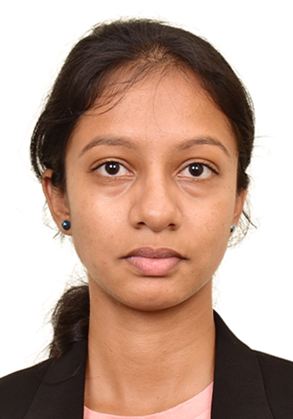

Erandi S.Wijesinghe
Profile Details
- Name
- Age
- Mobile
- email
- Address
- - Erandi Sulakkhana Wijesinghe
- - 27
- - 080-5264-6256
- - eswijesinghe190@gmail.com
- - Kyoto,Kyoto-shi,Kamigyo-ku,Nishitominakacho,466-2
Education Qualification
- Completed Bachelor's of Arts Honors (Geography) Degree at University of Colombo,Sri Lanka (2019-2023)
- Completed Diploma in Psychology and Counselling at SITC Campus,Sri Lanka
- Completed Advanced certificate course in HRM at SLTCA Campus,Sri Lanka
- Completed certificate course in Computer science a SLTCA Campus, Sri Lanka
- Passed the JLPT N5 level (2023 December)
- GCE Ordinary Level Examination at Swarnamali Girls'College-Kandy,Sri Lanka
Results
A6s B2s C1
- GCE Advanced Level Examination at Mahamaya Girls'College-Kandy,Sri Lanka
Results
A3s
Work Experiences
- Intern-Survey Department,GIS Branch in Colombo,Sri Lanka (6months)
- Intern-Customer Service at Bank of Ceylon in Digana,Sri Lanka (1 year)
Hobbies & Volunteer Experiences
Hobbies
- Reading Novels
- Waching Animes
Volunteer Experiences
- Volunteer work at animal shelters
- Volunteer work at Nucipera Lanka PVT (LTD) at Kurunegala,Sri Lanka